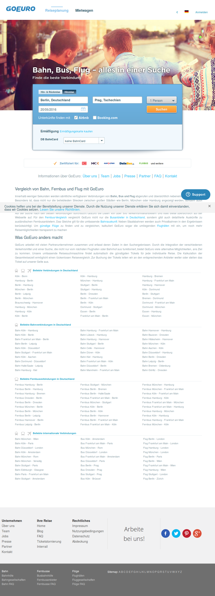
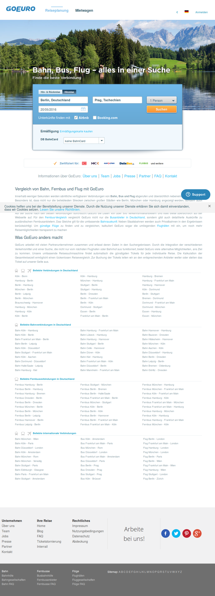

| Scenario: 1. Cheapest first sorting of Train results |
| | Passed: 0 | Failed: 1 | Undefined: 3 | Duration: 6.38s | | Before | | 0.12s |
| | Given I search for route from "Berlin, Deutschland" to "Prag, Tschechien" on "20" of next month | 5.54s |
org.openqa.selenium.WebDriverException: Element is not clickable at point (370, 52.69999694824219). Other element would receive the click: <div class="ui-datepicker-title"></div>
Command duration or timeout: 67 milliseconds
Build info: version: '2.53.0', revision: '35ae25b', time: '2016-03-15 16:57:40'
System info: host: 'tubuntu', ip: '127.0.1.1', os.name: 'Linux', os.arch: 'amd64', os.version: '3.19.0-58-generic', java.version: '1.8.0_77'
Driver info: org.openqa.selenium.firefox.FirefoxDriver
Capabilities [{applicationCacheEnabled=true, rotatable=false, handlesAlerts=true, databaseEnabled=true, version=45.0.1, platform=LINUX, nativeEvents=false, acceptSslCerts=true, webStorageEnabled=true, locationContextEnabled=true, browserName=firefox, takesScreenshot=true, javascriptEnabled=true, cssSelectorsEnabled=true}]
Session ID: cbb111bf-5d1b-4889-b3c2-be45a8cab8e1
at sun.reflect.NativeConstructorAccessorImpl.newInstance0(Native Method)
at sun.reflect.NativeConstructorAccessorImpl.newInstance(NativeConstructorAccessorImpl.java:62)
at sun.reflect.DelegatingConstructorAccessorImpl.newInstance(DelegatingConstructorAccessorImpl.java:45)
at java.lang.reflect.Constructor.newInstance(Constructor.java:423)
at org.openqa.selenium.remote.ErrorHandler.createThrowable(ErrorHandler.java:206)
at org.openqa.selenium.remote.ErrorHandler.throwIfResponseFailed(ErrorHandler.java:158)
at org.openqa.selenium.remote.RemoteWebDriver.execute(RemoteWebDriver.java:678)
at org.openqa.selenium.remote.RemoteWebElement.execute(RemoteWebElement.java:327)
at org.openqa.selenium.remote.RemoteWebElement.click(RemoteWebElement.java:85)
at sun.reflect.NativeMethodAccessorImpl.invoke0(Native Method)
at sun.reflect.NativeMethodAccessorImpl.invoke(NativeMethodAccessorImpl.java:62)
at sun.reflect.DelegatingMethodAccessorImpl.invoke(DelegatingMethodAccessorImpl.java:43)
at java.lang.reflect.Method.invoke(Method.java:498)
at org.openqa.selenium.support.events.EventFiringWebDriver$EventFiringWebElement$1.invoke(EventFiringWebDriver.java:335)
at com.sun.proxy.$Proxy21.click(Unknown Source)
at org.openqa.selenium.support.events.EventFiringWebDriver$EventFiringWebElement.click(EventFiringWebDriver.java:348)
at com.goeuro.bddAutomation.HomePage.i_search_for_route_from_to_on_of_next_month(HomePage.java:33)
at ✽.Given I search for route from "Berlin, Deutschland" to "Prag, Tschechien" on "20" of next month(resultsSortedByPrice.feature:7)
| | When I sort by cheapest price | 0.00s | | And I select results for "train" | 0.00s | | Then I should see a price sorted options with cheapest first | 0.00s | |  |
| | After | | 0.72s |
| | Back to Table of Contents | | Scenario: 2. Cheapest first sorting of Flight results |
| | Passed: 0 | Failed: 1 | Undefined: 3 | Duration: 6.03s | | Before | | 0.01s |
| | Given I search for route from "Berlin, Deutschland" to "Prag, Tschechien" on "20" of next month | 5.28s |
org.openqa.selenium.WebDriverException: Element is not clickable at point (370, 52.69999694824219). Other element would receive the click: <div class="ui-datepicker-title"></div>
Command duration or timeout: 68 milliseconds
Build info: version: '2.53.0', revision: '35ae25b', time: '2016-03-15 16:57:40'
System info: host: 'tubuntu', ip: '127.0.1.1', os.name: 'Linux', os.arch: 'amd64', os.version: '3.19.0-58-generic', java.version: '1.8.0_77'
Driver info: org.openqa.selenium.firefox.FirefoxDriver
Capabilities [{applicationCacheEnabled=true, rotatable=false, handlesAlerts=true, databaseEnabled=true, version=45.0.1, platform=LINUX, nativeEvents=false, acceptSslCerts=true, webStorageEnabled=true, locationContextEnabled=true, browserName=firefox, takesScreenshot=true, javascriptEnabled=true, cssSelectorsEnabled=true}]
Session ID: cbb111bf-5d1b-4889-b3c2-be45a8cab8e1
at sun.reflect.NativeConstructorAccessorImpl.newInstance0(Native Method)
at sun.reflect.NativeConstructorAccessorImpl.newInstance(NativeConstructorAccessorImpl.java:62)
at sun.reflect.DelegatingConstructorAccessorImpl.newInstance(DelegatingConstructorAccessorImpl.java:45)
at java.lang.reflect.Constructor.newInstance(Constructor.java:423)
at org.openqa.selenium.remote.ErrorHandler.createThrowable(ErrorHandler.java:206)
at org.openqa.selenium.remote.ErrorHandler.throwIfResponseFailed(ErrorHandler.java:158)
at org.openqa.selenium.remote.RemoteWebDriver.execute(RemoteWebDriver.java:678)
at org.openqa.selenium.remote.RemoteWebElement.execute(RemoteWebElement.java:327)
at org.openqa.selenium.remote.RemoteWebElement.click(RemoteWebElement.java:85)
at sun.reflect.GeneratedMethodAccessor11.invoke(Unknown Source)
at sun.reflect.DelegatingMethodAccessorImpl.invoke(DelegatingMethodAccessorImpl.java:43)
at java.lang.reflect.Method.invoke(Method.java:498)
at org.openqa.selenium.support.events.EventFiringWebDriver$EventFiringWebElement$1.invoke(EventFiringWebDriver.java:335)
at com.sun.proxy.$Proxy21.click(Unknown Source)
at org.openqa.selenium.support.events.EventFiringWebDriver$EventFiringWebElement.click(EventFiringWebDriver.java:348)
at com.goeuro.bddAutomation.HomePage.i_search_for_route_from_to_on_of_next_month(HomePage.java:33)
at ✽.Given I search for route from "Berlin, Deutschland" to "Prag, Tschechien" on "20" of next month(resultsSortedByPrice.feature:13)
| | When I sort by cheapest price | 0.00s | | And I select results for "flight" | 0.00s | | Then I should see a price sorted options with cheapest first | 0.00s | |  |
| | After | | 0.74s |
| | Back to Table of Contents | | Scenario: 3. Cheapest first sorting of Bus results |
| | Passed: 0 | Failed: 1 | Undefined: 3 | Duration: 3.72s | | Before | | 0.01s |
| | Given I search for route from "Berlin, Deutschland" to "Prag, Tschechien" on "20" of next month | 3.62s |
org.openqa.selenium.NoSuchElementException: Unable to locate element: {"method":"name","selector":"to_filter"}
Command duration or timeout: 50 milliseconds
For documentation on this error, please visit: http://seleniumhq.org/exceptions/no_such_element.html
Build info: version: '2.53.0', revision: '35ae25b', time: '2016-03-15 16:57:40'
System info: host: 'tubuntu', ip: '127.0.1.1', os.name: 'Linux', os.arch: 'amd64', os.version: '3.19.0-58-generic', java.version: '1.8.0_77'
Driver info: org.openqa.selenium.firefox.FirefoxDriver
Capabilities [{applicationCacheEnabled=true, rotatable=false, handlesAlerts=true, databaseEnabled=true, version=45.0.1, platform=LINUX, nativeEvents=false, acceptSslCerts=true, webStorageEnabled=true, locationContextEnabled=true, browserName=firefox, takesScreenshot=true, javascriptEnabled=true, cssSelectorsEnabled=true}]
Session ID: cbb111bf-5d1b-4889-b3c2-be45a8cab8e1
*** Element info: {Using=name, value=to_filter}
at sun.reflect.NativeConstructorAccessorImpl.newInstance0(Native Method)
at sun.reflect.NativeConstructorAccessorImpl.newInstance(NativeConstructorAccessorImpl.java:62)
at sun.reflect.DelegatingConstructorAccessorImpl.newInstance(DelegatingConstructorAccessorImpl.java:45)
at java.lang.reflect.Constructor.newInstance(Constructor.java:423)
at org.openqa.selenium.remote.ErrorHandler.createThrowable(ErrorHandler.java:206)
at org.openqa.selenium.remote.ErrorHandler.throwIfResponseFailed(ErrorHandler.java:158)
at org.openqa.selenium.remote.RemoteWebDriver.execute(RemoteWebDriver.java:678)
at org.openqa.selenium.remote.RemoteWebDriver.findElement(RemoteWebDriver.java:363)
at org.openqa.selenium.remote.RemoteWebDriver.findElementByName(RemoteWebDriver.java:461)
at org.openqa.selenium.By$ByName.findElement(By.java:303)
at org.openqa.selenium.remote.RemoteWebDriver.findElement(RemoteWebDriver.java:355)
at sun.reflect.GeneratedMethodAccessor7.invoke(Unknown Source)
at sun.reflect.DelegatingMethodAccessorImpl.invoke(DelegatingMethodAccessorImpl.java:43)
at java.lang.reflect.Method.invoke(Method.java:498)
at org.openqa.selenium.support.events.EventFiringWebDriver$2.invoke(EventFiringWebDriver.java:103)
at com.sun.proxy.$Proxy20.findElement(Unknown Source)
at org.openqa.selenium.support.events.EventFiringWebDriver.findElement(EventFiringWebDriver.java:188)
at com.goeuro.bddAutomation.HomePage.i_search_for_route_from_to_on_of_next_month(HomePage.java:29)
at ✽.Given I search for route from "Berlin, Deutschland" to "Prag, Tschechien" on "20" of next month(resultsSortedByPrice.feature:19)
Caused by: org.openqa.selenium.NoSuchElementException: Unable to locate element: {"method":"name","selector":"to_filter"}
For documentation on this error, please visit: http://seleniumhq.org/exceptions/no_such_element.html
Build info: version: '2.53.0', revision: '35ae25b', time: '2016-03-15 16:57:40'
System info: host: 'tubuntu', ip: '127.0.1.1', os.name: 'Linux', os.arch: 'amd64', os.version: '3.19.0-58-generic', java.version: '1.8.0_77'
Driver info: driver.version: unknown
at <anonymous class>.FirefoxDriver.prototype.findElementInternal_(file:///tmp/anonymous1544132624389815000webdriver-profile/extensions/fxdriver@googlecode.com/components/driver-component.js:10770)
at <anonymous class>.FirefoxDriver.prototype.findElement(file:///tmp/anonymous1544132624389815000webdriver-profile/extensions/fxdriver@googlecode.com/components/driver-component.js:10779)
at <anonymous class>.DelayedCommand.prototype.executeInternal_/h(file:///tmp/anonymous1544132624389815000webdriver-profile/extensions/fxdriver@googlecode.com/components/command-processor.js:12661)
at <anonymous class>.DelayedCommand.prototype.executeInternal_(file:///tmp/anonymous1544132624389815000webdriver-profile/extensions/fxdriver@googlecode.com/components/command-processor.js:12666)
at <anonymous class>.DelayedCommand.prototype.execute/<(file:///tmp/anonymous1544132624389815000webdriver-profile/extensions/fxdriver@googlecode.com/components/command-processor.js:12608)
| | When I sort by cheapest price | 0.00s | | And I select results for "bus" | 0.00s | | Then I should see a price sorted options with cheapest first | 0.00s | |
| | After | | 0.10s |
| | Back to Table of Contents |
|